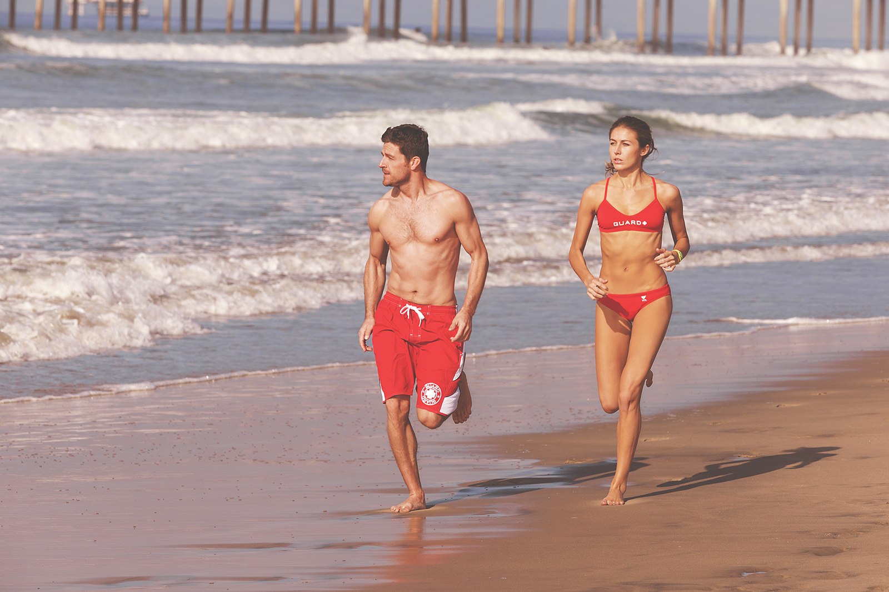
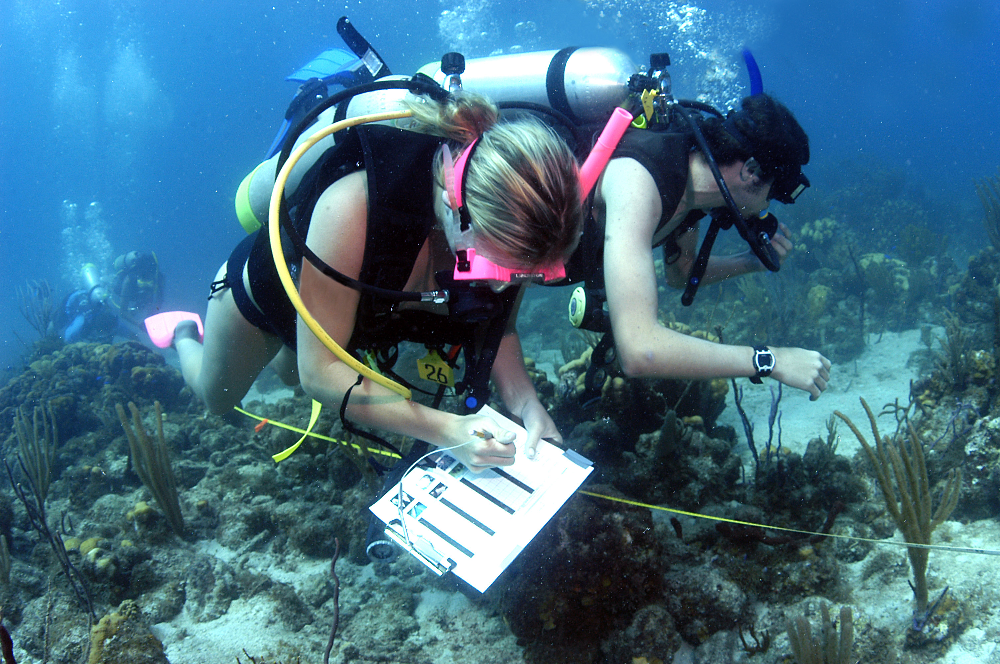
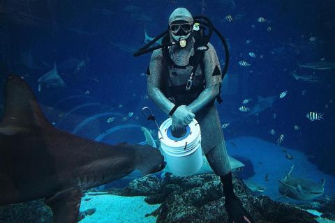
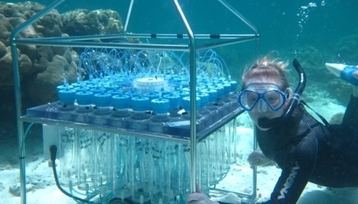

Sports
Sports are one of the most important things of all time, as it helps us to be healthy, improves mood, increases concentration, reduces stress and depression, improves sleep quality, improves confidence and encourages leadership. For the reasons presented above, we must practice sport. The most famous sports are Surf, Jet Ski, Water skiing, Wakeboarding and Scuba diving.
Surf is one of the most famous sport in the ocean, because is competitive and everyone have acesses to it. There is a lot of competitions around the world, the principal one is the World Surf League, there are just the top surfers in the world. There are a lot tipes of Surf, but the two most famous are the normal surf, with a fiber a board, and the bodyboard, with a hydrodynamic synthetic board.
Jet Ski is an exciting sport for those who love sailing in particular and love water sports in general. In particular, jet ski is only fun when playing two or more people. Jet Ski is realy used where people pass there summer.
Water Skeeing is a worldwide favorite sport. In this subject, you will stand on skis (like skiing) and be dragged across the water by the yacht. There are a few tips you need to remember when playing water skiing: always stand with your knees bent, keep your arms bent and let your boat drag you forward, lean back to keep gravity, breathe smoothly like normal (many people tend to hold their breath when playing extreme sports. Finally, it is possible to try to turn aside gently when you are used to pulling and keeping a good balance.
Wakeboarding is a game where you will stand on a board called a wakeboard and be dragged by the yacht on the water. Wakeboard usually has a small, narrow rectangle, with a pair of shoes fixed on the board. This sport is extremely easy to play, does not require too much effort. Just take a few simple techniques, anyone can play. Especially, as jet ski, wakeboarding is a sport that cannot be played alone. Therefore, this is a good opportunity to gather friends and family to enjoy water and talk and engage more. If you like watching sports, wakeboarding is also an international championship sport like Supra Pro Tour so you can watch.
Scuba diving, If you love the beauty of the sea, and watch the life under the water in the most vivid way, snorkelling is definitely the right sport for you. Imagine you will be like a resident of the ocean: A sunny morning, you jump into the warm water from the yacht in trendy diving suits and swim with fish, admire strange creatures that are hard to get visible in artificial aquarium. Bored back to the boat and the butler will wait for you to have a sweet orange juice as soon as you step up from the stairs.
Jobs
Fisher or Fisherman is someone who captures fish and other animals from a body of water, or gathers shellfish. Worldwide, there are about 38 million commercial and subsistence fishers and fish farmers. Fishers may be professional or recreational. Fishing has existed as a means of obtaining food since the Mesolithic period.

Lifeguard is a rescuer who supervises the safety and rescue of swimmers, surfers, and many other water sports participants such as in a swimming pools, water parks, beach, spa, river and lake. Lifeguards are trained in swimming and first aid, certified in water rescue using a variety of aids and equipment depending on requirements of their particular venue.

Marine Biologist study life in the oceans, and sometimes the oceans themselves. They may investigate the behavior and physiological processes of marine species, or the diseases and environmental conditions that affect them. They may also assess the impacts of human activities on marine life. Many marine biologists work under job titles such as wildlife biologist, zoologist, fish and wildlife biologist, fisheries biologist, aquatic biologist, conservation biologist, and biological technician.

Aquarist are in charge of feeding the fish and animals, preparing the food, and making any dietary adjustments that may be necessary. They are also responsible for making sure that the aquarium, tanks or exhibits are all clean and free of algae, that the water quality is maintained, and that the temperature is adjusted as needed.

Oceanographer covers a wide range of topics, including marine life and ecosystems, ocean circulation, plate tectonics and the geology of the seafloor, and the chemical and physical properties of the ocean.
